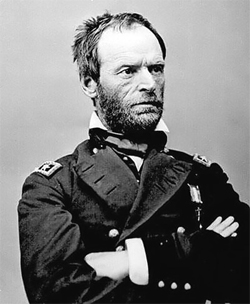
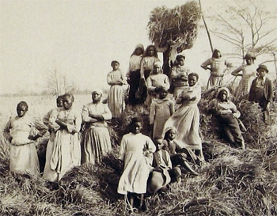

|
During the Civil War, a special order issued by a commanding general had the
force of law behind it. Written by Union General William Tecumseh Sherman,
Special Field Order No. 15 granted Southern land seized by the Union in Georgia,
South Carolina, and Florida to freed slaves. It also gave African Americans
complete control over this land and government assistance to develop it. Special
Field Order No. 15 was, however, only a short-lived boon for the freed men and
women. Special Field Order No. 15 was rescinded in 1865 by President Johnson.
Sherman issued Special Field Order No. 15 on January 16, 1865 while he and
his troops occupied Savannah, Georgia. Special Field Order No. 15 was the result
|

William T. Sherman
|
of a January 12 meeting that Sherman and Secretary of War Edwin M. Stanton had
with twenty leaders of the city's African-American community. The order granted
freed people full control of the sea islands as well as of the coastal land
thirty miles inland from Charleston, South Carolina south to Jacksonville,
Florida. This order helped the freed slaves who, as refugees, had no place to
go and no property. Specifically, Special Field Order No. 15 granted
African-American heads of families forty acres of land under "possessory title"
and protection by the United States Congress. The purpose of Special Field
Order No. 15 was to assist the freed people in creating self-governing and
self-sustaining settlements free from the intrusion of white control.
In this revolutionary order, Sherman asserted that the African American
settlers had the opportunity to choose the land on which they would farm and to
obtain government assistance in starting their agricultural settlements. To
this end, Sherman promised to loan the freed people mules to help them work the
land. Further, this order carefully laid out a description of the complete
control freed people would have over their lives and livelihoods on the land
formerly possessed by their masters. In Special Field Order No. 15, Sherman
prohibited white people from any roles other than those regulated by the federal
government, usually as military personnel placed on duty there. As a result,
the freed people would have full control over their daily lives. Further,
Sherman used these orders to stimulate enlistment in the Union Army by
guaranteeing land ownership to those freed men who served, even if they could
not immediately settle on the land.
To carry out this order, Sherman appointed General Rufus Saxton as the
Inspector of Settlements and Plantations. As such, Saxton took charge of
settling the freed people on the land covered by Special Field Order No. 15,
|

These refugees on the South Carolina Sea Islands
were among those individuals who gained land (temporarily) under the
terms of Special Field Order No. 15.
|
commonly referred to as "Sherman land." Saxton, like other abolitionists,
worried that Sherman's order isolated and colonized the freed people instead of
helping them. African Americans eagerly tried to take Sherman up on his promise
of land. Although thousands hurried to the sea islands to claim the land
promised, many were turned away as ineligible. Only male heads of households
had legal claim to the land under Sherman's orders, so freed women could not
successfully petition for land. Even so, by June 1865, approximately 40,000
freedpeople inhabited 400,000 acres of land granted to them in Special Field
Order No. 15. The United States government followed through with its promise of
help by providing the settlers with farm tools, seeds, and advisors. On the
urging of abolitionists, the government also sent missionaries and teachers to
the area to help the freed people establish themselves.
General Field Orders No. 15 helped instigate the Congressional act that
created a Bureau for the Relief of Freedmen and Refugees on March 3, 1865.
However, postwar President Andrew Johnson rescinded Sherman's Special Field
Order No. 15 on May 29, 1865 when he granted general amnesty to former
Confederates and returned land to the former slaveholders. Those freed people
settled on "Sherman land" lost their land ownership and returned to a life of
working other people's land.
Source: Joan Waugh, ed., Facts on File Encyclopedia of American
History: Civil War and Reconstruction, 1856 to 1869 (New York: Facts on
File, 2003), 332-333.
|